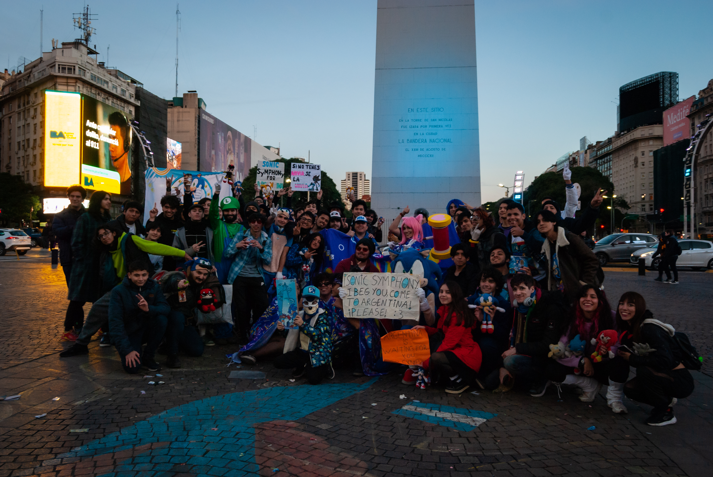

EXPO SONIC ES LA PRIMERA CONVENCIÓN DE SONIC EN ARGENTINA DONDE LA PASIÓN POR EL ERIZO AZUL SE VIVE AL MÁXIMO. DE FANS PARA FANS. LOS ADOLESCENTES Y MENORES DE EDAD ACOMPAÑADOS POR SUS PADRES VAN A PODER VIVIR LA EXPERIENCIA DE LA SONIC FEST.
OFRECER UNA EXPERIENCIA ÚNICA QUE CELEBRE TODO LO RELACIONADO CON SONIC: VIDEOJUEGOS, MÚSICA, ARTE, COSPLAY Y CULTURA FAN. SONIC EXPO FEST BUSCA UNIR A LOS FANS DE TODAS LAS EDADES EN UN AMBIENTE SEGURO, DIVERTIDO Y LLENO DE ACTIVIDADES.
🎮 EVENTO PARA TODAS LAS EDADES: DESDE LOS MÁS PEQUEÑOS HASTA LOS MÁS NOSTÁLGICOS.
🎯 ACTIVIDADES TEMÁTICAS: TRIVIA SONICCIENTA, KARAOKE CON CANCIONES ICÓNICAS, TORNEOS Y SPEEDRUNS SORPRESA.
🎵 SHOWS EN VIVO: LA BANDA THE BADNIKS Y LOS ULTRASÓNICOS TOCANDO MÚSICA DE SONIC.
🎨 ZONA DE ARTE Y STANDS: MERCHANDISING DE SONIC, TATUAJES TEMPORALES Y ESPACIO PARA DIBUJAR.
⭐ CONCURSOS DE COSPLAY Y PREMIOS PARA LOS MÁS CREATIVOS.
EXPO SONIC NACE COMO UNA EXTENSIÓN DE LA SONIC FEST, QUE DESDE MARZO DE 2024 ORGANIZA FIESTAS Y ENCUENTROS TEMÁTICOS PARA FANS. AHORA DAMOS EL SALTO A UNA CONVENCIÓN COMPLETA, CON UN FORMATO MÁS GRANDE Y FAMILIAR, MANTENIENDO LA ESENCIA DE LA COMUNIDAD.
💙 COMUNIDAD: CREADO POR FANS, PARA FANS.
🛡️ DIVERSIÓN SEGURA: CONTAMOS CON PROTOCOLOS Y PERSONAL DE SEGURIDAD EN TODOS LOS EVENTOS.
🌈 INCLUSIÓN: COSPLAYERS, GAMERS, ARTISTAS Y CURIOSOS SON BIENVENIDOS.